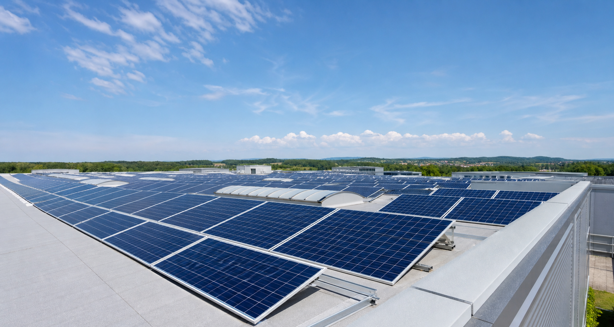

Finantare
Informatii privind finantarea proiectului
Proiectul Construire parc fotovoltaic este finantat prin Fondul pentru Modernizare, in cadrul apelului dedicat investitiilor in noi capacitati de producere a energiei electrice din surse regenerabile.
Sursa de finantare
Programul Fondul pentru Modernizare
Finantarea este acordata prin Ministerul Energiei, in calitate de autoritate nationala de implementare si gestionare a fondurilor alocate Romaniei prin Fondul pentru Modernizare.
Proiectul are ca obiectiv construirea unui parc fotovoltaic pentru producerea energiei electrice din surse regenerabile, cu amplasament in Comuna Catcau, judetul Cluj.

Date de identificare
Informatii din cererea si contractul de finantare
Incadrarea proiectului
Apelul de finantare si componenta proiectului
Sprijinirea investitiilor in noi capacitati de producere a energiei electrice produsa din surse regenerabile.
P1_OS1.1 - Cresterea capacitatii de producere a energiei din surse regenerabile solare, pana la 5 MW inclusiv.
Program cheie 1: SRE si stocarea energiei - sprijin pentru realizarea de noi centrale electrice si sisteme de incalzire-racire bazate pe surse regenerabile de energie.
FM_1.1 - Sprijin pentru realizarea de noi centrale electrice si sisteme de incalzire-racire bazate pe surse regenerabile de energie.